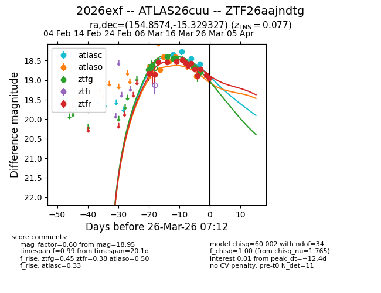
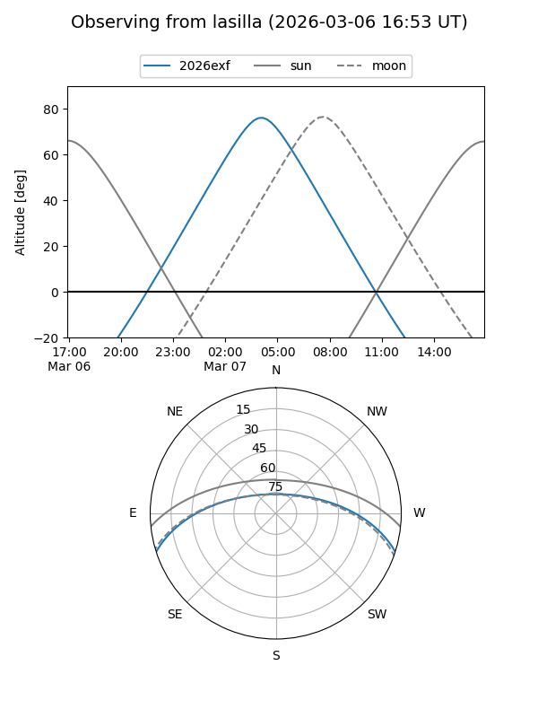
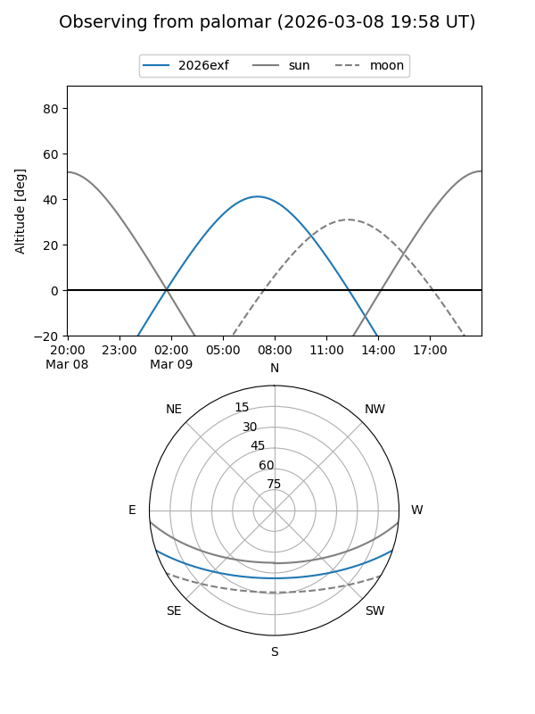
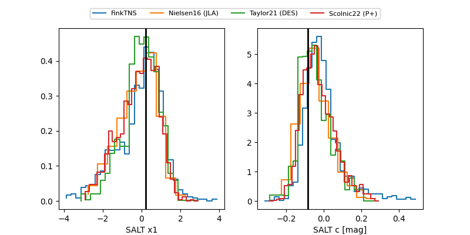

2026exf
Target 2026exf at 2026-03-26 07:14
Aliases and brokers:
FINK: link
Lasair: link
ALeRCE: link
TNS: link
YSE: link
alt names
ZTF26aajndtg (ztf,fink_ztf)
2026exf (tns,yse)
ATLAS26cuu (atlas)
Coordinates:
equatorial (ra, dec) = 154.8574,-15.32933
equatorial (HMS+DMS) = 10:19:25.77,-15:19:45.58
galactic (l, b) = (257.3483,+33.76601)
Flags:
confirmed ia
Photometry:
last atlasc=18.59, atlaso=18.90, ztfg=18.79, ztfr=18.95
4 atlasc, 5 atlaso, 12 ztfg, 14 ztfr detections
Lightcurve

Visibility


Additional plots
